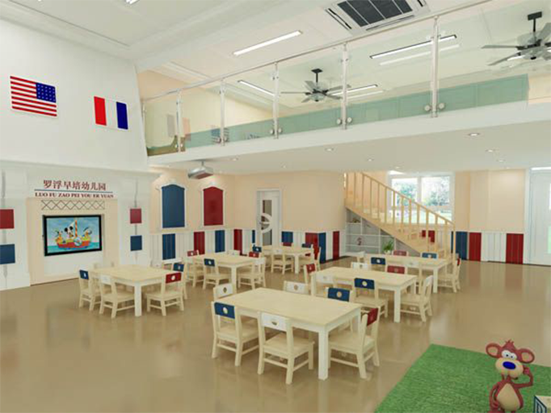

创生正文
创生正文

张智涵
2017-12-15 17:52

中新网4月9日电 据外媒报道，英国首相卡梅伦说，如果保守党大选获胜连任，英国所有小学生的英语、数学小学毕业时必须达标，否则就要重考。 按照保守党的计划，任何小学生在11岁(英国小学毕业年龄)时如果英语、数学不及格，必须在中学开始的第一年内重新考试。
中新网4月9日电 据外媒报道，英国首相卡梅伦说，如果保守党大选获胜连任，英国所有小学生的英语、数学小学毕业时必须达标，否则就要重考。 按照保守党的计划，任何小学生在11岁(英国小学毕业年龄)时如果英语、数学不及格，必须在中学开始的第一年内重新考试。

评论区
周亚弄: 这个阶段的孩子有强烈的表达欲，但不具备写句的能力。选词填句是孩子借助词库来填写一个有意义的句子。
01-15 17:52
周亚弄: 这个阶段的孩子有强烈的表达欲，但不具备写句的能力。选词填句是孩子借助词库来填写一个有意义的句子。
01-15 17:52